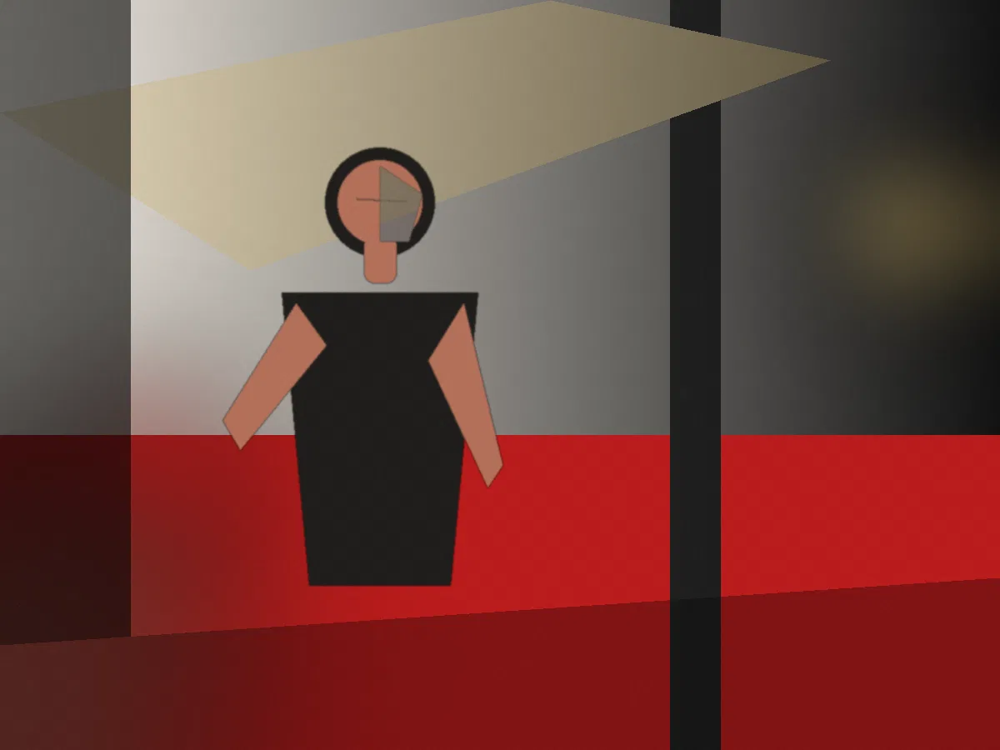
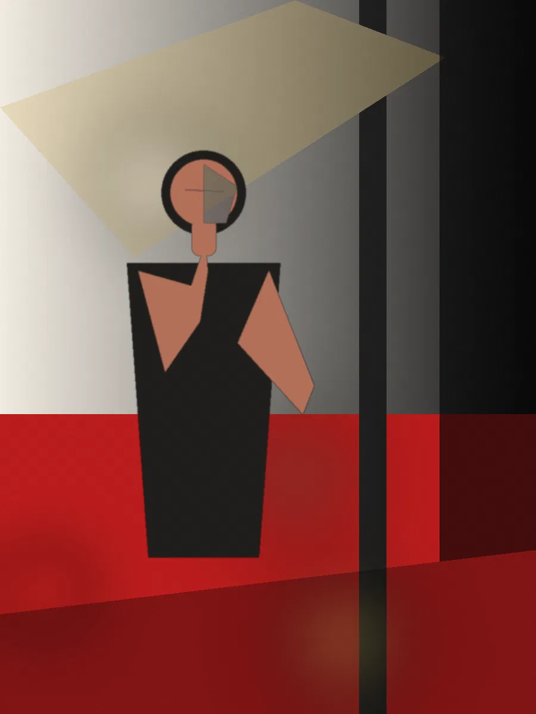
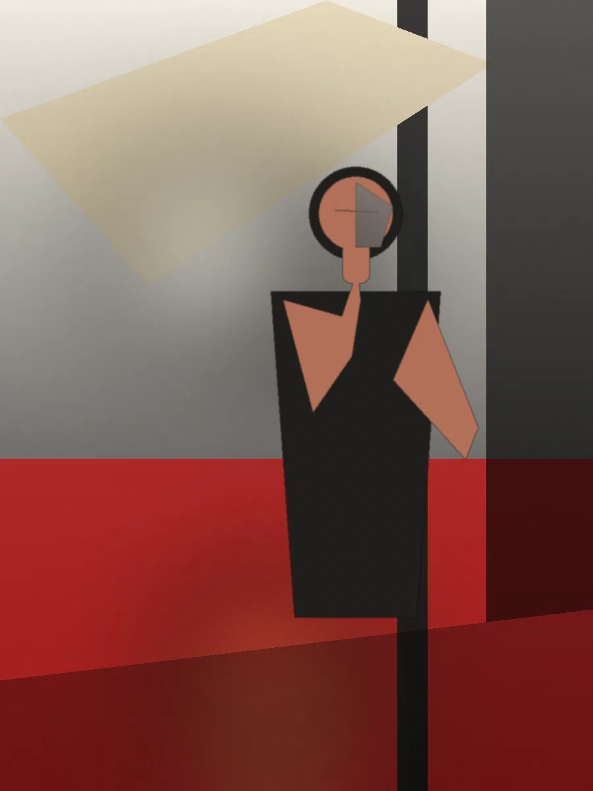
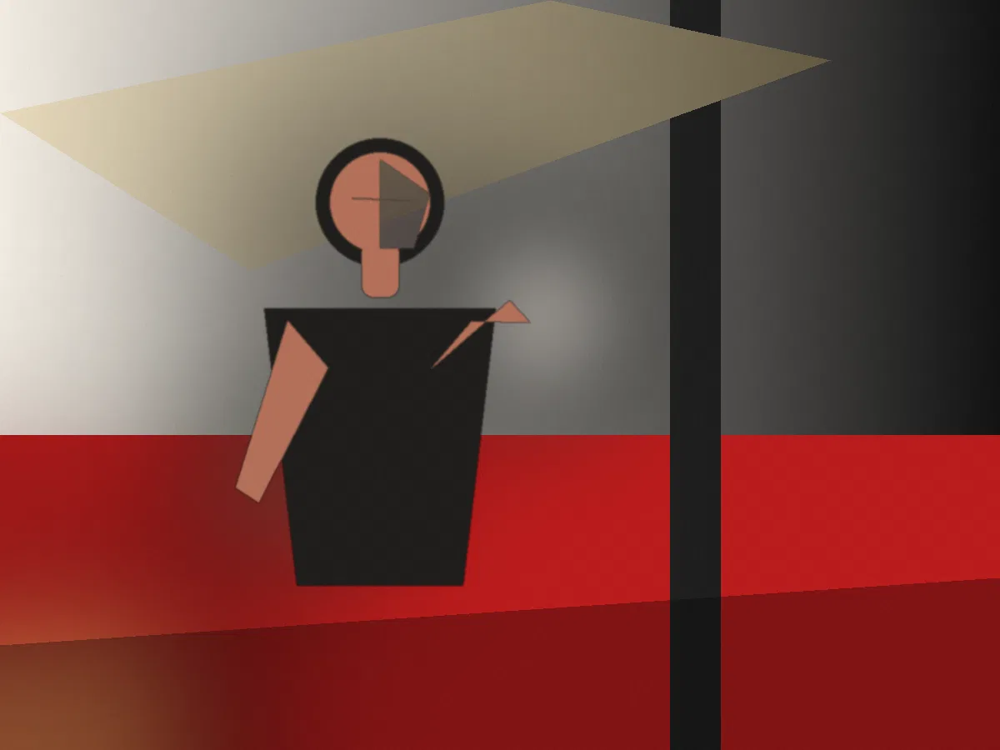
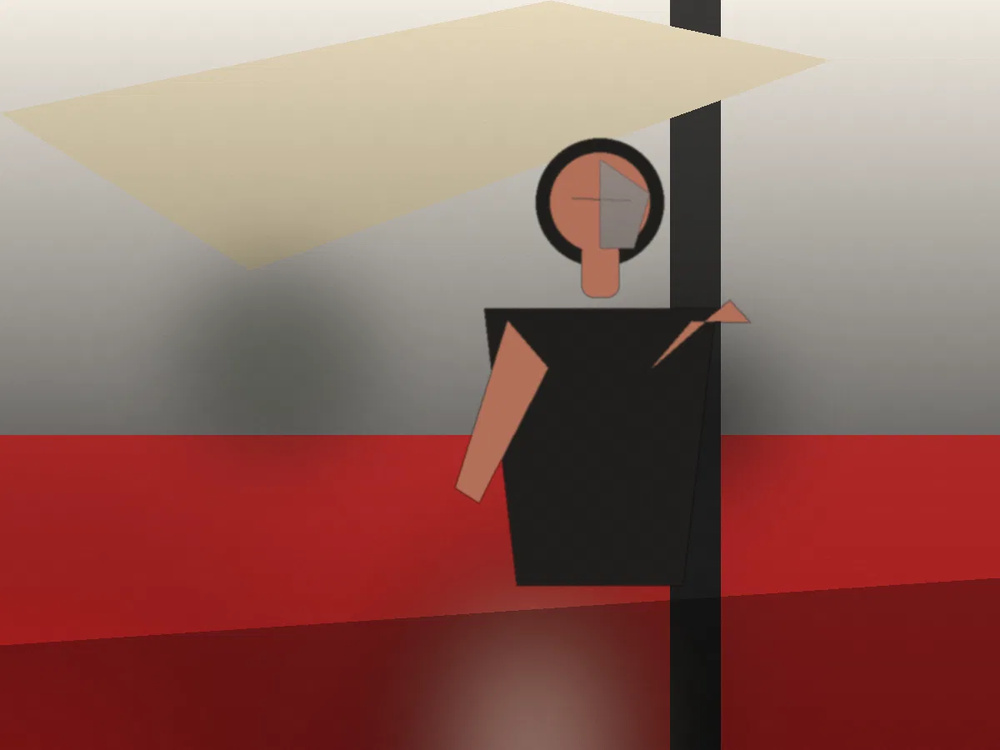
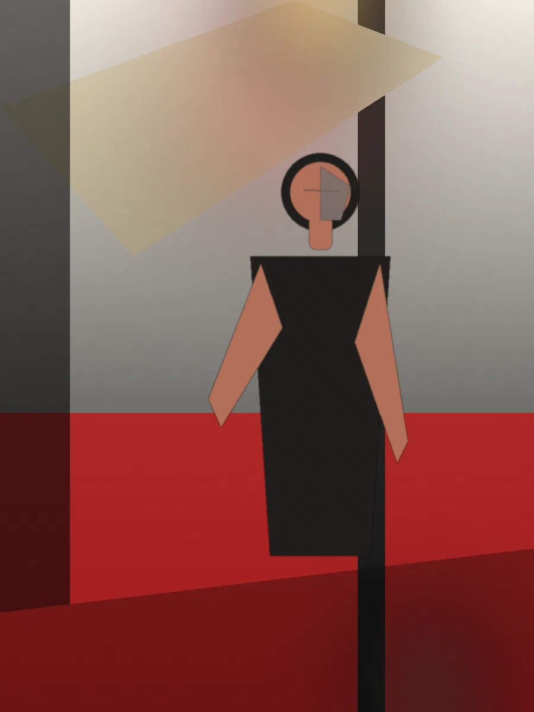

Demo project / Campaign / 2026
Signal
A campaign should not feel like thirty deliverables. It should feel like thirty pieces of evidence from one unmistakable world.
Photography / Motion / Direction
Placeholder assignment
Placeholder assignment
The assignment
Turn a launch into a world.
Campaign work has to survive multiple contexts without becoming visually incoherent. The operating idea here is signal density: a small set of repeatable decisions about color, geometry, light, framing, and behavior that remain recognizable whether the asset becomes a hero image, vertical cut, press still, or paid placement.
One idea.
Many surfaces.
The point is not visual sameness. The point is recognition. A campaign can change scale, crop, format, and tempo while still feeling like it came from the same thought.


SIGNAL / 26



Campaign